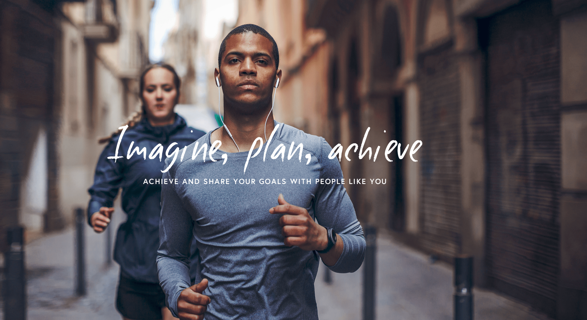
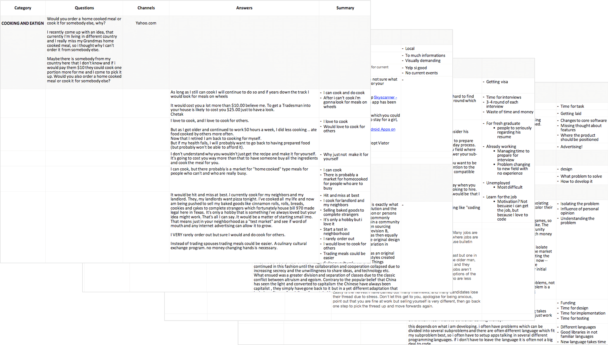
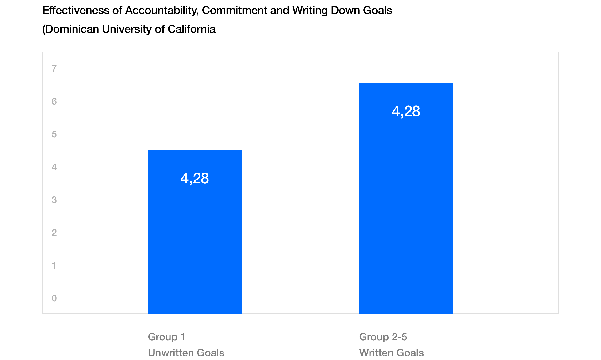
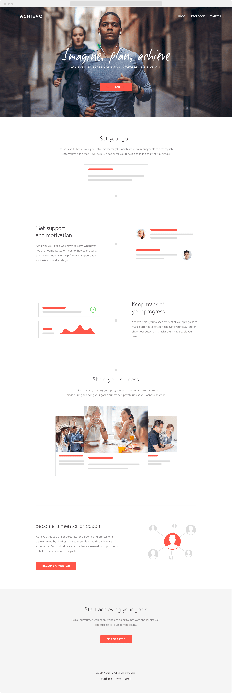
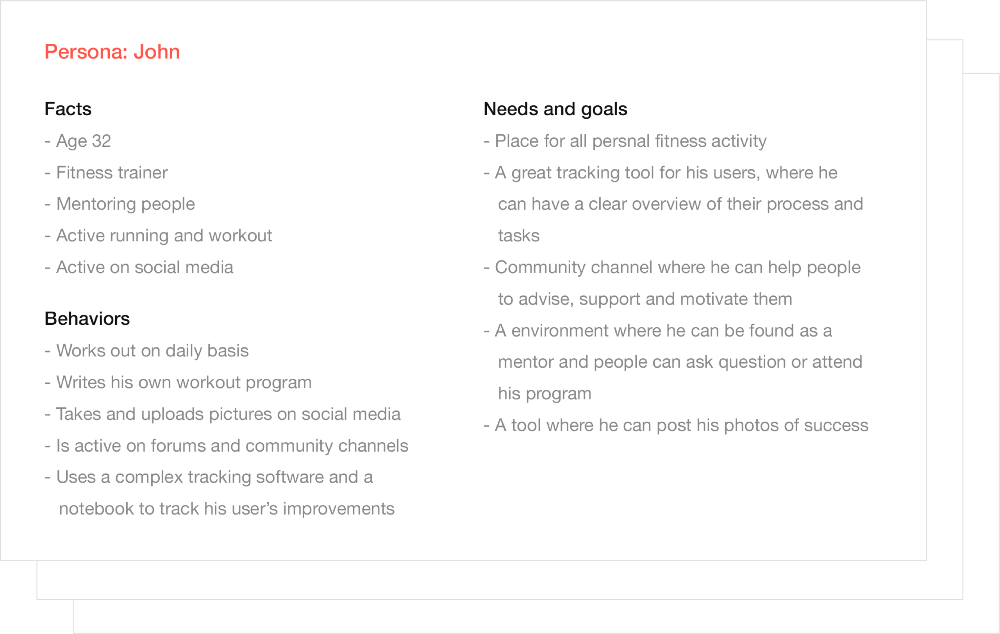
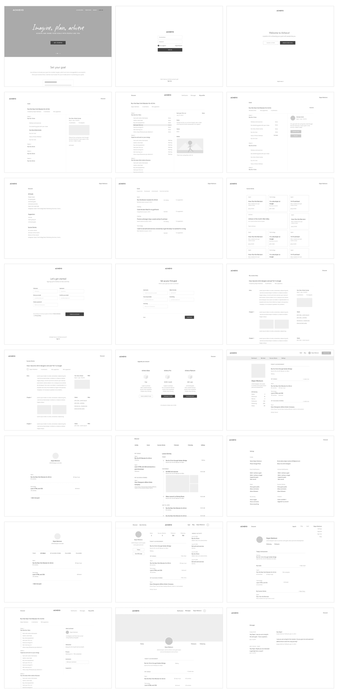

Achievo
Platform for achieving personal goals

Intro
In 2014 me and my friend left our full time jobs to build our own company. An idea that first seemed exciting and intriguing, and turned into a journey full of excitement, surprises with lots of ups and downs.
Being an entrepreneur requires more from you that every day job will ever do. And until you're willing to follow your dreams and are open to learn and give everything you can, then a journey like that becomes an opportunity for a lifetime and an experience you don't forget.
Despite the fact that our product never saw the light of the day, we had the opportunity to lear a lot about transforming ideas into products, business models, marketing, research, monetization and much more.
How it all started
In the early days our primary startup idea was to build a web platform for building digital products. People with different skills could get together and build products from ideation, design, development, all the way to the final product. After months of planning, research and market analysis, we have come to the conclusion that the product has too many loopholes and obstacles to make it a reality.
Without our full time jobs and now even without our primary startup idea, that started it all, we were too determined to give up. After studying the lean startup method we have decided to give all this another try. To find the right problems we asked ourselves what product or service are we building? What is the problem we want to solve? Who are the customers? What is the target market? We have wrote down couple of ideas, based on our personal interests and knowledge in the field and rated them based on different values like interest, time, field of knowledge, etc..

To validate our ideas we participated in different forums and community channels. At this time we have also moved to Berlin, so we went even beyond the digital channels and went on the streets. We stopped individuals who would potentially be the target group for each of the idea and asked them different questions to validate our idea and give us more insights.
One of the ideas we had was cooking and eating. People could either cook a meal for someone else, and anyone could show up through the app at their house or apartment and enjoy the meal together with them. Or they would go to someone else place and eat the meal some else prepared for them. This would be very valuable for new people who have just move to the city, or someone who lives alone but does miss sharing their meal with others. Interesting fact about this idea is that it does exist today.
After months of research we have picked and validate our idea. A platform for planing, sharing and achieving personal goals.
Problem Definition
Through research we came to the conclusion that people like to share and read success stories. Such stories are making people motivated and excited. In some cases they even show us what is possible and what is not and we are even willing to risk more.
This was also the time when social media platforms such as Instagram were just on the rise. People started to follow and look up to successful people. Some of them were even mentors or selling online courses. The problem we have identified was that there was no common platform for creating, planning and monitoring people, who are trying to achieve different goals through those courses.
Research
We wanted to know what is the real problem that we need to solve and get a sense of what users would need and want. We found couple of handful resources and studies. One of them mentioned that people who are writing down their goals and share that information or updates with a friend, were on average 33% more successful in accomplishing those goals, that those with merely formulated goals.

The market did not had any efficient tool that would allow people who are mentors or are selling different types of courses, to follow individual people how well they are doing on the journey to achieve a specific goal and guide or help them get back on track. We created couple of online surveys and interviews some users. The primary questions were around the problem they have when they want to achieve a goal.
Based on our research people were not achieving their goals because of:
Postponing goals
Hardest part is to start, but people usually search for excuses and postpone their goals.
Lack of motivation
Motivation is the key to achieve their goals and most of the time people don't get the support they need.
Lack of knowledge
Almost every goal requires certain degree of knowledge. Without any of it users can feel lost.
To many options
In some instances people are presented with too many options. This causes confusion and people loose interest.
Beginners insecurity
The most common problem is that people are afraid of failure. They don't like to take risks and rather stay safe where they are.
Hypothesis
After analyzing the data, we created and validate the hypothesis that became the foundations for our MVP:
Hypothesis 1
Create a goal, which can be break down into smaller targets and are more manageable and easier to accomplish.
Hypothesis 2
Create a goal, which can be break down into smaller targets and are more manageable and easier to accomplish.
Hypothesis 3
Create a goal, which can be break down into smaller targets and are more manageable and easier to accomplish.
Hypothesis 4
Create a goal, which can be break down into smaller targets and are more manageable and easier to accomplish.
Hypothesis 5
Create a goal, which can be break down into smaller targets and are more manageable and easier to accomplish.
Website validation
Before building our landing page, we decided to put some effort into our branding. We wanted to establish a strong visual image upon which we could communicate our mission and product with the world.

After the branding was done we built an informal landing page. The goal was to communicate our core idea and get validation from the users.

Validation data
Validating our product idea through the landing page saved us a lot of time before we even start building the MVP. For the validation to be successful we decided that the KPI for the call to action had to be at least 10% of conversion and over 50-100 signups. We also monitored how many users clicked on the sign-up button, but did not fill out the form and how much time they have spend on the website.
50% of users have submitted the goals they want to achieve. In one week we had around 800 unique visitors, 140 clicks on sign up form, 90 email and 7 mentors signups.
As our product idea was validated it was time to start preparing for the first MVP.
Number of page views in 1 month:
4345 unique visitors
Number of mentor signups:
43 clicks, 24 submissions
Number of user signups
158 clicks, 127 submissions
User stories
User stories were part of our agile approach that helped us to shift focus from writing about requirements to talking about them. They included a sentence or two, and more importantly, series of conversations about the desired functionality.

Personas
Creating personas helped us create empathy and understanding the people we are building the product for. They are a relatable snapshot of the target audience that highlights their needs, motivation, behaviors and demographics. At the end, it makes the design decisions less abstract and more human.
User flow
A visual representation of the user's flow to complete a tasks within the product. It's the user perspective of the site organization, making it easier to identify which steps could be improved or designed.
core product
A visual representation of the user's flow to complete a tasks within the product. It's the user perspective of the site organization, making it easier to identify which steps could be improved or designed.

Usability test
As a startup we did not had the intention of fundraising, therefore we wanted to alter our product incrementally in response to our customer feedback.
After we have created the wireframes we did some 1-1 interviews in which users have been asked to perform a series of tasks, such as create a new goal, create a task within the goal, change your personal email preferences and much more.
In total, we observed 18 attempts of performing specific tasks. Of those 18 attempts, 6 were successful and 2 were partially successful. For this particular site, we gave each partial success half a point. In general, 50% credit worked well for us, since we didn’t had any compelling reason to give different types of errors especially high or low scores.
In this example, the success rate was (6+(2*0.5))/18 = 38
Improvements
The test users showed us that there was a lot of room for improvements. We took the feedback we gathered and conveyed that into restructuring some of the user experience.
Final outcome
After couple of validations and tests we were at the point were the MVP was ready to be build and tested in the real environment.